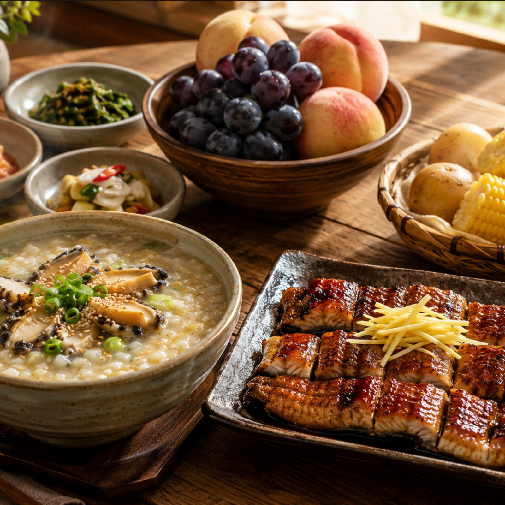
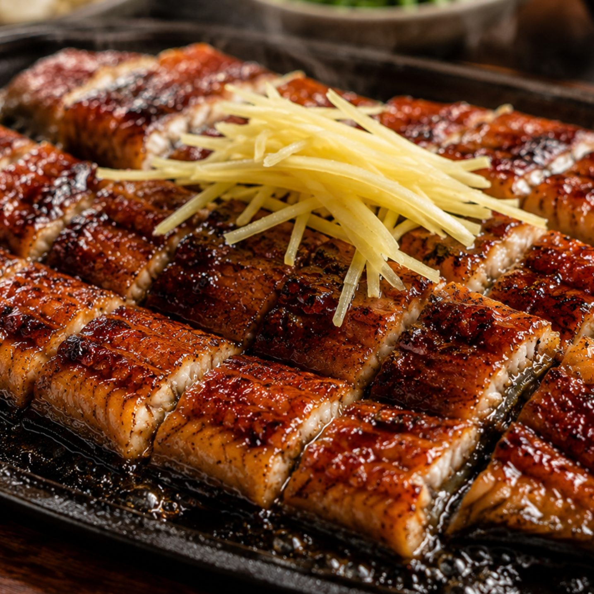
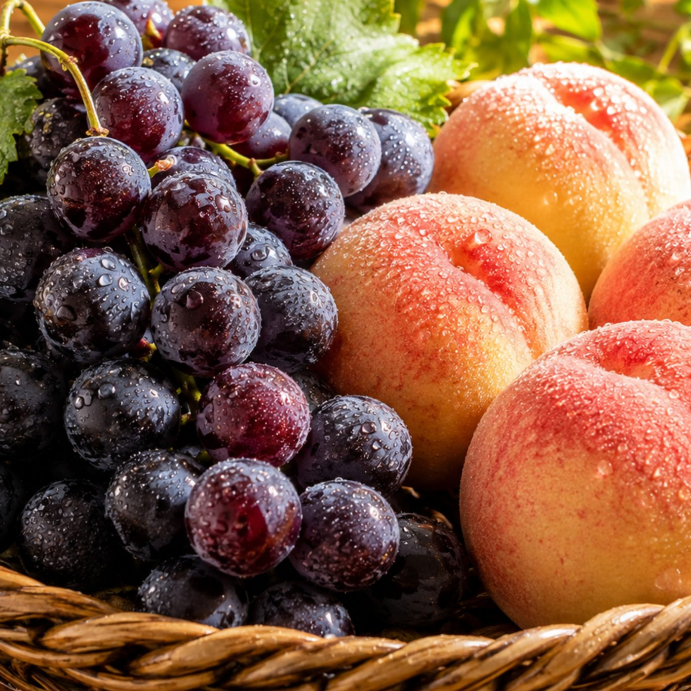
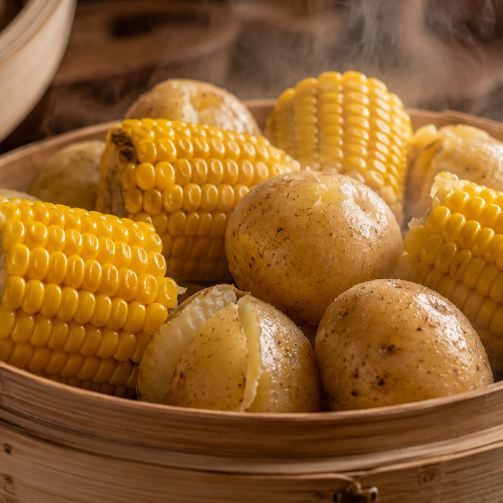

타우린과 아르기닌이 풍부한 8월 제철 전복 요리 모습 / 사진: 자체 제공

긴 여름철 무더위와 높은 습도로 인해 신체 에너지가 크게 소모되는 8월 중순 이후는 면역력 저하가 발생하기 쉬운 시기입니다. 잦은 찬 음료 섭취와 에어컨 사용으로 체내 소화 기능이 둔화되면서 만성 피로와 무기력증을 호소하는 경우가 많습니다. 이때는 체내 흡수율이 높은 제철 식재료를 식단에 구성하여 소모된 체력을 적절히 보충해 주는 관리가 필요합니다.
제철에 수확하거나 잡히는 음식은 해당 계절에 인체에 필요한 비타민과 무기질이 풍부하게 농축되어 있습니다. 인위적인 보충제에만 의존하기보다는 자연에서 얻은 신선한 음식을 골고루 섭취하는 것이 신체 밸런스를 잡는 지름길입니다. 특히 늦더위가 이어지는 시점에는 단백질과 항산화 물질이 풍부한 식단을 꾸준히 섭취해야 합니다.
건강한 식습관을 통해 체내 면역 체계를 다져두면 늦여름의 무더위를 무사히 넘기고 가을 환절기 질환도 예방할 수 있습니다. 일상 속에서 손쉽게 구할 수 있는 영양 식품을 식탁에 올리는 것만으로도 상당한 체력 증진을 기대할 수 있습니다. 지금부터 식탁에 올리면 좋은 대표적인 4가지 식재료를 차례로 확인해 보겠습니다.
8월에 살이 차오르는 전복은 기력 보충에 탁월한 해산물로 널리 알려진 대표적인 식재료입니다. 피로 해소에 유익한 타우린과 아르기닌 성분이 풍부하게 함유되어 있어 신체 활력을 북돋아 주는 역할을 합니다. 무더위로 인해 땀을 많이 흘리고 기운이 빠진 날에 따뜻한 죽이나 탕으로 끓여 먹으면 소화 부담도 덜 수 있습니다.
전복에 들어 있는 다양한 미네랄과 아미노산은 지친 근육의 피로를 풀어주고 면역 세포의 활동을 돕는 데 기여합니다. 지방 함량이 적고 단백질이 풍부하여 소화 흡수가 빠르기 때문에 어르신이나 성장기 청소년에게도 유익한 선택이 됩니다. 버터구이나 찜 요리 등 담백한 조리법을 활용하면 본연의 풍미와 영양을 온전히 누릴 수 있습니다.
구입할 때는 껍질에 광택이 돌고 손으로 만졌을 때 즉각적으로 반응하며 오므라드는 신선한 개체를 선택하는 것이 좋습니다. 내장까지 함께 조리하여 깊은 영양을 섭취하되 신선도가 의심되는 경우에는 충분히 가열하여 섭취해야 안전합니다. 영양 가득한 전복 요리로 여름철 떨어진 에너지를 든든하게 채워보시길 권장합니다.

대표적인 고단백 보양식인 장어는 불포화지방산과 비타민 A 성분이 풍부하여 늦여름 체력 보강에 유용합니다. 비타민 A는 점막을 보호하여 호흡기 면역력을 유지하는 데 도움을 주며 비타민 E는 항산화 작용을 담당합니다. 찬 음식을 자주 섭취하여 속이 차가워진 상태에서 따뜻한 성질을 지닌 보양 음식을 섭취하면 신체 균형을 맞출 수 있습니다.
미꾸라지를 푹 끓여낸 추어탕 역시 뼈째 갈아 넣어 칼슘과 단백질이 풍부하게 담긴 훌륭한 대안입니다. 우거지와 들깨가루를 듬뿍 넣고 끓인 탕 한 그릇은 소화기를 따뜻하게 덥혀주며 쇠약해진 기운을 북돋아 줍니다. 땀을 과도하게 흘려 손실된 전해질과 수분을 동시에 보충할 수 있어 늦여름 식단으로 손색이 없습니다.
다만 장어는 지방 함량이 높은 편이므로 평소 소화력이 약한 분들은 과식하지 않고 적정량을 섭취하는 것이 현명합니다. 생강과 부추처럼 따뜻한 성질의 채소를 곁들여 먹으면 느끼함을 줄이고 소화를 원활하게 도울 수 있습니다. 전통적으로 검증된 보양식을 적절히 곁들여 계절 변화에 따른 체력 저하를 방어하시기 바랍니다.

8월 중순을 지나며 단맛이 오르는 포도는 흡수가 빠른 포도당과 과당이 풍부하여 즉각적인 에너지 공급원 역할을 합니다. 안토시아닌과 레스베라트롤 같은 항산화 성분이 껍질과 씨에 풍부하여 체내 활성산소를 억제하는 데 도움을 줍니다. 나른한 오후 시간에 신선한 포도 한 송이를 섭취하면 피로 회복과 기분 전환에 긍정적인 영향을 줍니다.
수분과 식이섬유가 풍부한 복숭아는 여름철 강한 자외선에 지친 피부와 신체에 수분을 보충해 주는 과일입니다. 복숭아에 포함된 아스파라긴산과 구연산은 젖산 축적을 막아 근육 뭉침과 피로를 해소하는 데 도움을 줍니다. 과육이 부드럽고 수분이 많아 소화가 잘되므로 식욕이 저하된 어르신들도 부담 없이 즐기실 수 있습니다.
과일은 비타민과 수분이 가득하지만 당분 함량이 있으므로 혈당 관리가 필요한 분들은 식후 즉시보다 간식으로 적당량을 드시는 것이 좋습니다. 흐르는 물에 깨끗이 세척하여 껍질째 드시거나 신선한 상태 그대로 섭취하는 것이 영양 보존에 유리합니다. 제철 과일의 상큼한 과즙으로 늦여름 갈증을 건강하게 달래보시길 바랍니다.

여름에 수확하는 햇감자는 사과보다 풍부한 비타민 C와 칼륨을 함유하고 있어 신체 활력을 돕는 건강 채소입니다. 감자의 전분 성분은 위 점막을 보호해 주므로 찬 음식으로 인해 쓰리고 약해진 위장을 편안하게 달래줍니다. 칼륨은 체내에 쌓인 불필요한 나트륨과 노폐물을 배출하여 붓기를 완화하는 데 유익하게 작용합니다.
쫀득한 식감이 일품인 옥수수는 비타민 B군과 식이섬유가 풍부하여 무더위로 인한 무기력증을 덜어주는 곡물입니다. 비타민 B1과 B2는 섭취한 영양소가 에너지로 원활히 전환되도록 도와 신체 대사 기능을 촉진합니다. 옥수수수염을 버리지 않고 물에 달여 차로 마시면 수분 보충과 이뇨 작용에 상당한 도움이 됩니다.
감자와 옥수수는 찌거나 구워서 간편한 간식으로 섭취할 수 있어 바쁜 일상 속에서도 챙겨 먹기 수월합니다. 기름에 튀기기보다는 찜기에 쪄서 담백하게 조리하면 고유의 영양 성분을 파괴 없이 섭취할 수 있습니다. 신선한 제철 채소를 식단에 곁들여 속이 편안하면서도 영양 가득한 하루를 보내시기 바랍니다.
영양가 있는 음식을 챙기는 것과 함께 일상생활에서의 규칙적인 리듬을 유지하는 것이 기력 회복의 핵심입니다. 실내외 온도 차이가 5도 이상 벌어지지 않도록 조절하여 체온 조절 능력이 저하되는 것을 방지해야 합니다. 늦은 밤 찬 바람에 체온이 급격히 떨어지지 않도록 가벼운 겉옷을 준비하는 것도 좋은 방법입니다.
하루에 1.5리터에서 2리터 정도의 미온수를 조금씩 나누어 마셔 체내 수분 균형을 상시 유지하는 습관이 중요합니다. 무더위 속에서 지나친 고강도 운동은 피하고 선선한 아침이나 저녁 시간을 활용해 가벼운 산책을 권장합니다. 규칙적인 수면 시간을 확보하여 낮 동안 소모된 신체 에너지를 회복할 수 있는 충분한 휴식을 취해야 합니다.
신선한 제철 음식과 올바른 생활 습관이 결합할 때 신체 본연의 자연 면역력이 더욱 견고해질 수 있습니다. 몸이 보내는 피로 신호를 가볍게 넘기지 말고 제철 식재료로 정성스럽게 차린 한 끼를 선물해 보시기 바랍니다. 다가오는 가을을 활기차고 건강하게 맞이하기 위해 오늘부터 작은 실천을 시작해 보시길 권장합니다.